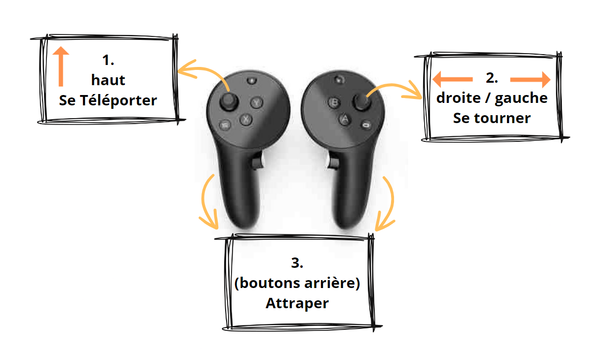

Ce jeu est pour tous les intéressés de l'histoire ! Conseillé pour les enfants de 10 à 12 ans, cette aventure vous emmène à travers trois époques de notre civilisation !
Voyagez à travers ces époques et interagissez avec le monde pour en apprendre plus !
Pour installer ce projet, veuillez suivre les étapes suivantes :

Téléportez-vous en pointant le joystick en avant et visez l'endroit souhaité. Lorsque la cible devient verte, il suffit de lâcher le joystick, et vous vous téléporterez !
À l'intérieur des mondes historiques, vous aurez l'occasion de rencontrer de petites "buzzers" posés sur son piédestal. Il suffit d'appuyer avec votre main virtuelle et vous aurez alors tout un tas d'informations qui vous seront fournies au sujet d'un élément du décor ou de l'époque !